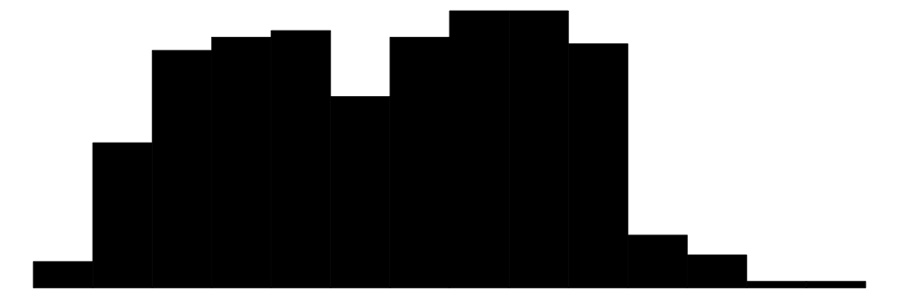
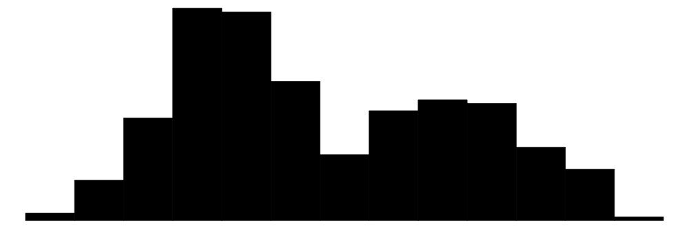

Data Summaries
datasummary is a function from the modelsummary package. It allows us to create data summaries, frequency tables, crosstabs, correlation tables, balance tables (aka “Table 1”), and more. It has many benefits:
- Easy to use.
- Extremely flexible.
- Many output formats: HTML, LaTeX, Microsoft Word and Powerpoint, Text/Markdown, PDF, RTF, or Image files.
- Embed tables in
Rmarkdownorknitrdynamic documents. -
Customize the appearance of tables with the
tinytable,gt,kableExtraorflextablepackages. The possibilities are endless!
This tutorial will show how to draw tables like these (and more!):


datasummary is built around the fantastic tables package for R. It is a thin “wrapper” which adds convenience functions and arguments; a user-interface consistent with modelsummary; cleaner html output; and the ability to export tables to more formats, including gt tables, flextable objects, and Microsoft Word documents.
datasummary is a general-purpose table-making tool. It allows us to build (nearly) any summary table we want by using simple 2-sided formulae. For example, in the expression x + y ~ mean + sd, the left-hand side of the formula identifies the variables or statistics to display as rows, and the right-hand side defines the columns. Below, we will see how variables and statistics can be “nested” with the * operator to produce tables like the ones above.
In addition to datasummary, the modelsummary package includes a “family” of companion functions named datasummary_*. These functions facilitate the production of standard, commonly used tables. This family currently includes:
-
datasummary(): Flexible function to create custom tables using 2-sided formulae. -
datasummary_balance(): Group characteristics (e.g., control vs. treatment) -
datasummary_correlation(): Table of correlations. -
datasummary_skim(): Quick summary of a dataset. -
datasummary_df(): Create a table from any dataframe. -
datasummary_crosstab(): Cross tabulations of categorical variables.
In the next three sections, we illustrate how to use datasummary_balance, datasummary_correlation, datasummary_skim, and datasummary_crosstab. Then, we dive into datasummary itself to highlight its ease and flexibility.
datasummary_skim
The first datasummary companion function is called datasummary_skim. It was heavily inspired by one of my favorite data exploration tools for R: the skimr package. The goal of this function is to give us a quick look at the data.
To illustrate, we download data from the cool new palmerpenguins package by Alison Presmanes Hill and Allison Horst. These data were collected at the Palmer Station in Antarctica by Gorman, Williams & Fraser (2014), and they include 3 categorical variables and 4 numeric variables.
library(modelsummary)
library(tidyverse)
url <- 'https://vincentarelbundock.github.io/Rdatasets/csv/palmerpenguins/penguins.csv'
penguins <- read.csv(url, na.strings = "")To summarize the numeric variables in the dataset, we type:
datasummary_skim(penguins)| Unique | Missing Pct. | Mean | SD | Min | Median | Max | Histogram | |
|---|---|---|---|---|---|---|---|---|
| rownames | 344 | 0 | 172.5 | 99.4 | 1.0 | 172.5 | 344.0 |  |
| bill_length_mm | 165 | 1 | 43.9 | 5.5 | 32.1 | 44.5 | 59.6 |  |
| bill_depth_mm | 81 | 1 | 17.2 | 2.0 | 13.1 | 17.3 | 21.5 |  |
| flipper_length_mm | 56 | 1 | 200.9 | 14.1 | 172.0 | 197.0 | 231.0 |  |
| body_mass_g | 95 | 1 | 4201.8 | 802.0 | 2700.0 | 4050.0 | 6300.0 |  |
| year | 3 | 0 | 2008.0 | 0.8 | 2007.0 | 2008.0 | 2009.0 |  |
| N | % | |||||||
| species | Adelie | 152 | 44.2 | |||||
| Chinstrap | 68 | 19.8 | ||||||
| Gentoo | 124 | 36.0 | ||||||
| island | Biscoe | 168 | 48.8 | |||||
| Dream | 124 | 36.0 | ||||||
| Torgersen | 52 | 15.1 | ||||||
| sex | female | 165 | 48.0 | |||||
| male | 168 | 48.8 | ||||||
| NA | 11 | 3.2 |
To summarize the categorical variables in the dataset, we type:
datasummary_skim(penguins, type = "categorical")| N | % | ||
|---|---|---|---|
| species | Adelie | 152 | 44.2 |
| Chinstrap | 68 | 19.8 | |
| Gentoo | 124 | 36.0 | |
| island | Biscoe | 168 | 48.8 |
| Dream | 124 | 36.0 | |
| Torgersen | 52 | 15.1 | |
| sex | female | 165 | 48.0 |
| male | 168 | 48.8 | |
| NA | 11 | 3.2 |
datasummary_balance
The expressions “balance table” or “Table 1” refer to a type of table which is often printed in the opening pages of a scientific peer-reviewed article. Typically, this table includes basic descriptive statistics about different subsets of the study population. For instance, analysts may want to compare the socio-demographic characteristics of members of the “control” and “treatment” groups in a randomized control trial, or the flipper lengths of male and female penguins. In addition, balance tables often include difference in means tests.
To illustrate how to build a balance table using the datasummary_balance function, we download data about a job training experiment studies in Lalonde (1986). Then, we clean up the data by renaming and recoding a few variables.
# Download and read data
training <- 'https://vincentarelbundock.github.io/Rdatasets/csv/Ecdat/Treatment.csv'
training <- read.csv(training, na.strings = "")
# Rename and recode variables
training <- training %>%
mutate(`Earnings Before` = re75 / 1000,
`Earnings After` = re78 / 1000,
Treatment = ifelse(treat == TRUE, 'Treatment', 'Control'),
Married = ifelse(married == TRUE, 'Yes', 'No')) %>%
select(`Earnings Before`,
`Earnings After`,
Treatment,
Ethnicity = ethn,
Age = age,
Education = educ,
Married)Now, we execute the datasummary_balance function. If the estimatr package is installed, datasummary_balance will calculate the difference in means and test statistics.
caption <- 'Descriptive statistics about participants in a job training experiment. The earnings are displayed in 1000s of USD. This table was created using the "datasummary" function from the "modelsummary" package for R.'
reference <- 'Source: Lalonde (1986) American Economic Review.'
library(modelsummary)
datasummary_balance(~Treatment,
data = training,
title = caption,
notes = reference)Note that if the dataset includes columns called “blocks”, “clusters”, or “weights”, this information will automatically be taken into consideration by estimatr when calculating the difference in means and the associated statistics.
Users can also use the ~ 1 formula to indicate that they want to summarize all the data instead of splitting the analysis across subgroups:
datasummary_balance(~ 1, data = training)| Mean | Std. Dev. | ||
|---|---|---|---|
| Earnings Before | 17.9 | 13.9 | |
| Earnings After | 20.5 | 15.6 | |
| Age | 34.2 | 10.5 | |
| Education | 12.0 | 3.1 | |
| N | Pct. | ||
| Treatment | Control | 2490 | 93.1 |
| Treatment | 185 | 6.9 | |
| Ethnicity | black | 780 | 29.2 |
| hispanic | 92 | 3.4 | |
| other | 1803 | 67.4 | |
| Married | No | 483 | 18.1 |
| Yes | 2192 | 81.9 |
datasummary_correlation
The datasummary_correlation accepts a dataframe or tibble, it identifies all the numeric variables, and calculates the correlation between each of those variables:
datasummary_correlation(mtcars)| mpg | cyl | disp | hp | drat | wt | qsec | vs | am | gear | carb | |
|---|---|---|---|---|---|---|---|---|---|---|---|
| mpg | 1 | . | . | . | . | . | . | . | . | . | . |
| cyl | -.85 | 1 | . | . | . | . | . | . | . | . | . |
| disp | -.85 | .90 | 1 | . | . | . | . | . | . | . | . |
| hp | -.78 | .83 | .79 | 1 | . | . | . | . | . | . | . |
| drat | .68 | -.70 | -.71 | -.45 | 1 | . | . | . | . | . | . |
| wt | -.87 | .78 | .89 | .66 | -.71 | 1 | . | . | . | . | . |
| qsec | .42 | -.59 | -.43 | -.71 | .09 | -.17 | 1 | . | . | . | . |
| vs | .66 | -.81 | -.71 | -.72 | .44 | -.55 | .74 | 1 | . | . | . |
| am | .60 | -.52 | -.59 | -.24 | .71 | -.69 | -.23 | .17 | 1 | . | . |
| gear | .48 | -.49 | -.56 | -.13 | .70 | -.58 | -.21 | .21 | .79 | 1 | . |
| carb | -.55 | .53 | .39 | .75 | -.09 | .43 | -.66 | -.57 | .06 | .27 | 1 |
The values displayed in this table are equivalent to those obtained by calling: cor(x, use='pairwise.complete.obs').
The datasummary_correlation function has a methods argument. The default value is "pearson", but it also accepts other values like "spearman". In addition, method can accept any function which takes a data frame and returns a matrix. For example, we can create a custom function to display information from the correlation package. This allows us to include significance stars even if the stars argument is not supported by default in datasummary_correlation():
library(correlation)
fun <- function(x) {
out <- correlation(x) |>
summary() |>
format(2) |>
as.matrix()
row.names(out) <- out[, 1]
out <- out[, 2:ncol(out)]
return(out)
}
datasummary_correlation(mtcars, method = fun)| carb | gear | am | vs | qsec | wt | drat | hp | disp | cyl | |
|---|---|---|---|---|---|---|---|---|---|---|
| mpg | -.55* | .48 | .60** | .66** | .42 | -.87*** | .68*** | -.78*** | -.85*** | -.85*** |
| cyl | .53* | -.49 | -.52* | -.81*** | -.59* | .78*** | -.70*** | .83*** | .90*** | |
| disp | .39 | -.56* | -.59* | -.71*** | -.43 | .89*** | -.71*** | .79*** | ||
| hp | .75*** | -.13 | -.24 | -.72*** | -.71*** | .66** | -.45 | |||
| drat | -.09 | .70*** | .71*** | .44 | .09 | -.71*** | ||||
| wt | .43 | -.58* | -.69*** | -.55* | -.17 | |||||
| qsec | -.66** | -.21 | -.23 | .74*** | ||||||
| vs | -.57* | .21 | .17 | |||||||
| am | .06 | .79*** | ||||||||
| gear | .27 |
datasummary_crosstab
A cross tabulation is often useful to explore the association between two categorical variables.
library(modelsummary)
url <- 'https://vincentarelbundock.github.io/Rdatasets/csv/palmerpenguins/penguins.csv'
penguins <- read.csv(url, na.strings = "")
datasummary_crosstab(species ~ sex, data = penguins)| species | female | male | All | |
|---|---|---|---|---|
| Adelie | N | 73 | 73 | 152 |
| % row | 48.0 | 48.0 | 100.0 | |
| Chinstrap | N | 34 | 34 | 68 |
| % row | 50.0 | 50.0 | 100.0 | |
| Gentoo | N | 58 | 61 | 124 |
| % row | 46.8 | 49.2 | 100.0 | |
| All | N | 165 | 168 | 344 |
| % row | 48.0 | 48.8 | 100.0 |
You can create multi-level crosstabs by specifying interactions using the * operator:
datasummary_crosstab(species ~ sex * island, data = penguins)| female | male | |||||||
|---|---|---|---|---|---|---|---|---|
| species | Biscoe | Dream | Torgersen | Biscoe | Dream | Torgersen | All | |
| Adelie | N | 22 | 27 | 24 | 22 | 28 | 23 | 152 |
| % row | 14.5 | 17.8 | 15.8 | 14.5 | 18.4 | 15.1 | 100.0 | |
| Chinstrap | N | 0 | 34 | 0 | 0 | 34 | 0 | 68 |
| % row | 0.0 | 50.0 | 0.0 | 0.0 | 50.0 | 0.0 | 100.0 | |
| Gentoo | N | 58 | 0 | 0 | 61 | 0 | 0 | 124 |
| % row | 46.8 | 0.0 | 0.0 | 49.2 | 0.0 | 0.0 | 100.0 | |
| All | N | 80 | 61 | 24 | 83 | 62 | 23 | 344 |
| % row | 23.3 | 17.7 | 7.0 | 24.1 | 18.0 | 6.7 | 100.0 | |
By default, the cell counts and row percentages are shown for each cell, and both row and column totals are calculated. To show cell percentages or column percentages, or to drop row and column totals, adjust the statistic argument. This argument accepts a formula that follows the datasummary “language”. To understand exactly how it works, you may find it useful to skip to the datasummary tutorial in the next section. Example:
datasummary_crosstab(species ~ sex,
statistic = 1 ~ Percent("col"),
data = penguins)| species | female | male | |
|---|---|---|---|
| Adelie | % col | 44.2 | 43.5 |
| Chinstrap | % col | 20.6 | 20.2 |
| Gentoo | % col | 35.2 | 36.3 |
| All | % col | 100.0 | 100.0 |
See ?datasummary_crosstab for more details.
datasummary
datasummary tables are specified using a 2-sided formula, divided by a tilde ~. The left-hand side describes the rows; the right-hand side describes the columns. To illustrate how this works, we will again be using the palmerpenguins dataset:
To display the flipper_length_mm variable as a row and the mean as a column, we type:
datasummary(flipper_length_mm ~ Mean,
data = penguins)| Mean | |
|---|---|
| flipper_length_mm | 200.92 |
To flip rows and columns, we flip the left and right-hand sides of the formula:
datasummary(Mean ~ flipper_length_mm,
data = penguins)| flipper_length_mm | |
|---|---|
| Mean | 200.92 |
Custom summary functions
The Mean function is a shortcut supplied by modelsummary, and it is equivalent to mean(x,na.rm=TRUE). Since the flipper_length_mm variable includes missing observation, using the mean formula (with default na.rm=FALSE) would produce a missing/empty cell:
datasummary(flipper_length_mm ~ mean,
data = penguins)| mean | |
|---|---|
| flipper_length_mm |
modelsummary supplies these functions: Mean, SD, Min, Max, Median, P0, P25, P50, P75, P100, Histogram, and a few more (see the package documentation).
Users are also free to create and use their own custom summaries. Any R function which takes a vector and produces a single value is acceptable. For example, the Range functions return a numerical value, and the MinMax returns a string:
Range <- function(x) max(x, na.rm = TRUE) - min(x, na.rm = TRUE)
datasummary(flipper_length_mm ~ Range,
data = penguins)| Range | |
|---|---|
| flipper_length_mm | 59.00 |
MinMax <- function(x) paste0('[', min(x, na.rm = TRUE), ', ', max(x, na.rm = TRUE), ']')
datasummary(flipper_length_mm ~ MinMax,
data = penguins)| MinMax | |
|---|---|
| flipper_length_mm | [172, 231] |
Concatenating with +
To include more rows and columns, we use the + sign:
datasummary(flipper_length_mm + body_mass_g ~ Mean + SD,
data = penguins)| Mean | SD | |
|---|---|---|
| flipper_length_mm | 200.92 | 14.06 |
| body_mass_g | 4201.75 | 801.95 |
Sometimes, it can be cumbersome to list all variables separated by + signs. The All() function is a useful shortcut:
datasummary(All(penguins) ~ Mean + SD,
data = penguins)| Mean | SD | |
|---|---|---|
| rownames | 172.50 | 99.45 |
| bill_length_mm | 43.92 | 5.46 |
| bill_depth_mm | 17.15 | 1.97 |
| flipper_length_mm | 200.92 | 14.06 |
| body_mass_g | 4201.75 | 801.95 |
| year | 2008.03 | 0.82 |
By default, All selects all numeric variables. This behavior can be changed by modifying the function’s arguments. See ?All for details.
Nesting with *
datasummary can nest variables and statistics inside categorical variables using the * symbol. When applying the the * operator to factor, character, or logical variables, columns or rows will automatically be nested. For instance, if we want to display separate means for each value of the variable sex, we use mean * sex:
datasummary(flipper_length_mm + body_mass_g ~ mean * sex,
data = penguins)| female | male | |
|---|---|---|
| flipper_length_mm | 197.36 | 204.51 |
| body_mass_g | 3862.27 | 4545.68 |
We can use parentheses to nest several terms inside one another, using a call of this form: x * (y + z). Here is an example with nested columns:
datasummary(body_mass_g ~ sex * (mean + sd),
data = penguins)| female | male | |||
|---|---|---|---|---|
| mean | sd | mean | sd | |
| body_mass_g | 3862.27 | 666.17 | 4545.68 | 787.63 |
Here is an example with nested rows:
datasummary(sex * (body_mass_g + flipper_length_mm) ~ mean + sd,
data = penguins)| sex | mean | sd | |
|---|---|---|---|
| female | body_mass_g | 3862.27 | 666.17 |
| flipper_length_mm | 197.36 | 12.50 | |
| male | body_mass_g | 4545.68 | 787.63 |
| flipper_length_mm | 204.51 | 14.55 |
The order in which terms enter the formula determines the order in which labels are displayed. For example, this shows island above sex:
datasummary(flipper_length_mm + body_mass_g ~ mean * island * sex,
data = penguins)| Biscoe | Dream | Torgersen | ||||
|---|---|---|---|---|---|---|
| female | male | female | male | female | male | |
| flipper_length_mm | 205.69 | 213.29 | 190.02 | 196.31 | 188.29 | 194.91 |
| body_mass_g | 4319.38 | 5104.52 | 3446.31 | 3987.10 | 3395.83 | 4034.78 |
This shows sex above island values:
datasummary(flipper_length_mm + body_mass_g ~ mean * sex * island,
data = penguins)| female | male | |||||
|---|---|---|---|---|---|---|
| Biscoe | Dream | Torgersen | Biscoe | Dream | Torgersen | |
| flipper_length_mm | 205.69 | 190.02 | 188.29 | 213.29 | 196.31 | 194.91 |
| body_mass_g | 4319.38 | 3446.31 | 3395.83 | 5104.52 | 3987.10 | 4034.78 |
By default, datasummary omits column headers with a single value/label across all columns, except for the header that sits just above the data. If the header we want to see is not displayed, we may want to reorder the terms of the formula. To show all headers, set sparse_header=FALSE:
datasummary(flipper_length_mm + body_mass_g ~ mean * sex * island,
data = penguins,
sparse_header = FALSE)| female | male | |||||
|---|---|---|---|---|---|---|
| Biscoe | Dream | Torgersen | Biscoe | Dream | Torgersen | |
| flipper_length_mm | 205.69 | 190.02 | 188.29 | 213.29 | 196.31 | 194.91 |
| body_mass_g | 4319.38 | 3446.31 | 3395.83 | 5104.52 | 3987.10 | 4034.78 |
When using sparse_header=FALSE, it is often useful to insert Heading() * in the table formula, in order to rename or omit some of the labels manually. Type ?tables::Heading for details and examples.
Renaming with =
Personally, I prefer to rename variables and values before drawing my tables, using backticks when variable names include whitespace. For example,
tmp <- penguins %>%
select(`Flipper length (mm)` = flipper_length_mm,
`Body mass (g)` = body_mass_g)
datasummary(`Flipper length (mm)` + `Body mass (g)` ~ Mean + SD,
data = tmp)| Mean | SD | |
|---|---|---|
| Flipper length (mm) | 200.92 | 14.06 |
| Body mass (g) | 4201.75 | 801.95 |
However, thanks to the tables package, datasummary offers two additional mechanisms to rename. First, we can wrap a term in parentheses and use the equal = sign: (NewName=OldName):
datasummary((`Flipper length (mm)` = flipper_length_mm) + (`Body mass (g)` = body_mass_g) ~
island * ((Avg. = Mean) + (Std.Dev. = SD)),
data = penguins)| Biscoe | Dream | Torgersen | ||||
|---|---|---|---|---|---|---|
| Avg. | Std.Dev. | Avg. | Std.Dev. | Avg. | Std.Dev. | |
| Flipper length (mm) | 209.71 | 14.14 | 193.07 | 7.51 | 191.20 | 6.23 |
| Body mass (g) | 4716.02 | 782.86 | 3712.90 | 416.64 | 3706.37 | 445.11 |
Second, we can use the Heading() function:
datasummary(Heading("Flipper length (mm)") * flipper_length_mm + Heading("Body mass (g)") * body_mass_g ~ island * (Mean + SD),
data = penguins)| Biscoe | Dream | Torgersen | ||||
|---|---|---|---|---|---|---|
| Mean | SD | Mean | SD | Mean | SD | |
| Flipper length (mm) | 209.71 | 14.14 | 193.07 | 7.51 | 191.20 | 6.23 |
| Body mass (g) | 4716.02 | 782.86 | 3712.90 | 416.64 | 3706.37 | 445.11 |
The Heading function also has a nearData argument which can be useful in cases where some rows are nested but others are not. Compare the last row of these two tables:
datasummary(sex * (flipper_length_mm + bill_length_mm) + Heading("Body mass (g)") * body_mass_g ~ Mean + SD,
data = penguins)| sex | Mean | SD | |
|---|---|---|---|
| female | flipper_length_mm | 197.36 | 12.50 |
| bill_length_mm | 42.10 | 4.90 | |
| male | flipper_length_mm | 204.51 | 14.55 |
| bill_length_mm | 45.85 | 5.37 | |
| Body mass (g) | 4201.75 | 801.95 |
datasummary(sex * (flipper_length_mm + bill_length_mm) + Heading("Body mass (g)", nearData=FALSE) * body_mass_g ~ Mean + SD,
data = penguins)| sex | Mean | SD | |
|---|---|---|---|
| female | flipper_length_mm | 197.36 | 12.50 |
| bill_length_mm | 42.10 | 4.90 | |
| male | flipper_length_mm | 204.51 | 14.55 |
| bill_length_mm | 45.85 | 5.37 | |
| Body mass (g) | 4201.75 | 801.95 |
Counts and Percentages
The tables package allows datasummary to use neat tricks to produce frequency tables:
- Add a
Nto the right-hand side of the equation. - Add
Percent()to the right-hand side to calculate the percentage of observations in each cell. - Add
1to the left-hand side to include a row with the total number of observations:
datasummary(species * sex + 1 ~ N + Percent(),
data = penguins)| species | sex | N | Percent |
|---|---|---|---|
| Adelie | female | 73 | 21.22 |
| male | 73 | 21.22 | |
| Chinstrap | female | 34 | 9.88 |
| male | 34 | 9.88 | |
| Gentoo | female | 58 | 16.86 |
| male | 61 | 17.73 | |
| All | 344 | 100.00 |
Note that the Percent() function accepts a denom argument to determine if percentages should be calculated row or column-wise, or if they should take into account all cells.
Weighted percentages
The Percent() pseudo-function also accepts a fn argument, which must be a function which accepts two vectors: x is the values in the current cell, and y is all the values in the whole dataset. The default fn is:
datasummary(species * sex + 1 ~ N + Percent(fn = function(x, y) 100 * length(x) / length(y)),
data = penguins)| species | sex | N | Percent |
|---|---|---|---|
| Adelie | female | 73 | 21.22 |
| male | 73 | 21.22 | |
| Chinstrap | female | 34 | 9.88 |
| male | 34 | 9.88 | |
| Gentoo | female | 58 | 16.86 |
| male | 61 | 17.73 | |
| All | 344 | 100.00 |
The code above takes the number of elements in the cell length(x) and divides it by the number of total elements length(y).
Now, let’s say we want to display percentages weighted by one of the variables of the dataset. This can often be useful with survey weights, for example. Here, we use an arbitrary column of weights called flipper_length_mm:
wtpct <- function(x, y) sum(x, na.rm = TRUE) / sum(y, na.rm = TRUE) * 100
datasummary(species * sex + 1 ~ N + flipper_length_mm * Percent(fn = wtpct),
data = penguins)| species | sex | N | Percent |
|---|---|---|---|
| Adelie | female | 73 | 19.95 |
| male | 73 | 20.44 | |
| Chinstrap | female | 34 | 9.49 |
| male | 34 | 9.89 | |
| Gentoo | female | 58 | 17.95 |
| male | 61 | 19.67 | |
| All | 344 | 100.00 |
In each cell we now have the sum of weights in that cell, divided by the total sum of weights in the column.
Custom percentages
Here is another simple illustration of Percent function mechanism in action, where we combine counts and percentages in a simple nice label:
Factor
The * nesting operator that we used above works automatically for factor, character, and logical variables. Sometimes, it is convenient to use it with other types of variables, such as binary numeric variables. In that case, we can wrap the variable name inside a call to Factor(). This allows us to treat a variable as factor, without having to modify it in the original data. For example, in the mtcars data, there is a binary numeric variable call am. We nest statistics within categories of am by typing:
datasummary(mpg + hp ~ Factor(am) * (mean + sd),
data = mtcars)| 0 | 1 | |||
|---|---|---|---|---|
| mean | sd | mean | sd | |
| mpg | 17.15 | 3.83 | 24.39 | 6.17 |
| hp | 160.26 | 53.91 | 126.85 | 84.06 |
Arguments: na.rm=TRUE
We can pass any argument to the summary function by including a call to Arguments(). For instance, there are missing values in the flipper_length_mm variable of the penguins dataset. Therefore, the standard mean function will produce no result, because its default argument is na.rm=FALSE. We can change that by calling:
datasummary(flipper_length_mm ~ mean + mean*Arguments(na.rm=TRUE),
data = penguins)| mean | mean | |
|---|---|---|
| flipper_length_mm | 200.92 |
Notice that there is an empty cell (NA) under the normal mean function, but that the mean call with Arguments(na.rm=TRUE) produced a numeric result.
We can pass the same arguments to multiple functions using the parentheses:
datasummary(flipper_length_mm ~ (mean + sd) * Arguments(na.rm=TRUE),
data = penguins)| mean | sd | |
|---|---|---|
| flipper_length_mm | 200.92 | 14.06 |
Note that the shortcut functions that modelsummary supplies use na.rm=TRUE by default, so we can use them directly without arguments, even when there are missing values:
datasummary(flipper_length_mm ~ Mean + Var + P75 + Range,
data = penguins)| Mean | Var | P75 | Range | |
|---|---|---|---|---|
| flipper_length_mm | 200.92 | 197.73 | 213.00 | 59.00 |
Arguments: Weighted Mean
You can use the Arguments mechanism to do various things, such as calculating weighted means:
newdata <- data.frame(
x = rnorm(20),
w = rnorm(20),
y = rnorm(20))
datasummary(x + y ~ weighted.mean * Arguments(w = w),
data = newdata)| weighted.mean | |
|---|---|
| x | -2.31 |
| y | -2.82 |
Which produces the same results as:
But different results from:
Logical subsets
Cool stuff is possible with logical subsets:
datasummary((bill_length_mm > 44.5) + (bill_length_mm <= 44.5) ~ Mean * flipper_length_mm,
data = penguins)| NA | NA |
|---|---|
| bill_length_mm > 44.5 | 209.68 |
| bill_length_mm | 192.45 |
See the tables package documentation for more details and examples.
Missing values
At least 3 distinct issues can arise related to missing values.
Functions and na.rm
An empty cell can appear in the table when a statistical function returns NA instead of a numeric value. In those cases, you should:
- Make sure that your statistical function (e.g.,
meanorsd) usesna.rm=TRUEby default - Use the
Argumentsstrategy to setna.rm=TRUE(see theArgumentssection of this vignette). - Use a convenience function supplied by
modelsummary, wherena.rmisTRUEby default:Mean,SD,P25, etc.
Empty crosstab cells
An empty cell can appear in the table when a crosstab is deeply nested, and there are no observations for a given combination of covariates. In those cases, you can use the * DropEmpty pseudo-function. See the “Empty cells” section of this vignette for examples.
datasummary(island * species * body_mass_g ~ sex * (Mean + SD),
data = penguins)| female | male | |||||
|---|---|---|---|---|---|---|
| island | species | Mean | SD | Mean | SD | |
| Biscoe | Adelie | body_mass_g | 3369.32 | 343.47 | 4050.00 | 355.57 |
| Chinstrap | body_mass_g | |||||
| Gentoo | body_mass_g | 4679.74 | 281.58 | 5484.84 | 313.16 | |
| Dream | Adelie | body_mass_g | 3344.44 | 212.06 | 4045.54 | 330.55 |
| Chinstrap | body_mass_g | 3527.21 | 285.33 | 3938.97 | 362.14 | |
| Gentoo | body_mass_g | |||||
| Torgersen | Adelie | body_mass_g | 3395.83 | 259.14 | 4034.78 | 372.47 |
| Chinstrap | body_mass_g | |||||
| Gentoo | body_mass_g | |||||
datasummary(island * species * body_mass_g ~ sex * (Mean + SD) * DropEmpty(),
data = penguins)| female | male | |||||
|---|---|---|---|---|---|---|
| island | species | Mean | SD | Mean | SD | |
| Biscoe | Adelie | body_mass_g | 3369.32 | 343.47 | 4050.00 | 355.57 |
| Gentoo | body_mass_g | 4679.74 | 281.58 | 5484.84 | 313.16 | |
| Dream | Adelie | body_mass_g | 3344.44 | 212.06 | 4045.54 | 330.55 |
| Chinstrap | body_mass_g | 3527.21 | 285.33 | 3938.97 | 362.14 | |
| Torgersen | Adelie | body_mass_g | 3395.83 | 259.14 | 4034.78 | 372.47 |
Percent()
By default, the Percent() function computes the share of each category with respect to the whole data, including missing observations, but we can work around this with some trickery:jig
dat <- data.frame(z = c(0,0,1,0,NA,0,1))
prop.table(table(dat$z))
0 1
0.6666667 0.3333333 datasummary(Factor(z) ~ N + Percent(), data = dat)| z | N | Percent |
|---|---|---|
| 0 | 4 | 57.14 |
| 1 | 2 | 28.57 |
To count percentages without missing values, we can exploit the fact that Percent() accepts a denom argument which can be a logical vector:
datasummary(Factor(z) ~ N + Percent(denom = !is.na(dat$z)), data = dat)| z | N | Percent |
|---|---|---|
| 0 | 4 | 66.67 |
| 1 | 2 | 33.33 |
Add rows
new_rows <- data.frame('Does',
2,
'plus',
2,
'equals',
5,
'?')
datasummary(flipper_length_mm + body_mass_g ~ species * (Mean + SD),
data = penguins,
add_rows = new_rows)| Adelie | Chinstrap | Gentoo | ||||
|---|---|---|---|---|---|---|
| Mean | SD | Mean | SD | Mean | SD | |
| flipper_length_mm | 189.95 | 6.54 | 195.82 | 7.13 | 217.19 | 6.48 |
| body_mass_g | 3700.66 | 458.57 | 3733.09 | 384.34 | 5076.02 | 504.12 |
| Does | 2.00 | plus | 2.00 | equals | 5.00 | ? |
Add columns
new_cols <- data.frame('New Stat' = runif(2))
datasummary(flipper_length_mm + body_mass_g ~ species * (Mean + SD),
data = penguins,
add_columns = new_cols)| Adelie | Chinstrap | Gentoo | |||||
|---|---|---|---|---|---|---|---|
| Mean | SD | Mean | SD | Mean | SD | New.Stat | |
| flipper_length_mm | 189.95 | 6.54 | 195.82 | 7.13 | 217.19 | 6.48 | 0.95 |
| body_mass_g | 3700.66 | 458.57 | 3733.09 | 384.34 | 5076.02 | 504.12 | 0.44 |
Output formats
All functions in the datasummary_* family accept the same output argument. Tables can be saved to several file formats:
f <- flipper_length_mm ~ island * (mean + sd)
datasummary(f, data = penguins, output = 'table.html')
datasummary(f, data = penguins, output = 'table.tex')
datasummary(f, data = penguins, output = 'table.docx')
datasummary(f, data = penguins, output = 'table.pptx')
datasummary(f, data = penguins, output = 'table.md')
datasummary(f, data = penguins, output = 'table.rtf')
datasummary(f, data = penguins, output = 'table.jpg')
datasummary(f, data = penguins, output = 'table.png')They can be returned in human-readable data.frames, markdown, html, or LaTeX code to the console:
datasummary(f, data = penguins, output = 'data.frame')
datasummary(f, data = penguins, output = 'markdown')
datasummary(f, data = penguins, output = 'html')
datasummary(f, data = penguins, output = 'latex')datasummary can return objects compatible with the tinytable, gt, kableExtra, flextable, huxtable, and DT table creation and customization packages:
datasummary(f, data = penguins, output = 'tinytable')
datasummary(f, data = penguins, output = 'gt')
datasummary(f, data = penguins, output = 'kableExtra')
datasummary(f, data = penguins, output = 'flextable')
datasummary(f, data = penguins, output = 'huxtable')
datasummary(f, data = penguins, output = 'DT')Please note that hierarchical or “nested” column labels are only available for these output formats: kableExtra, gt, html, rtf, and LaTeX. When saving tables to other formats, nested labels will be combined to a “flat” header.
Rounding
The fmt argument allows us to set the printing format of numeric values. It accepts a single number representing the number of digits after the period, or a string to be passed to the sprintf function. For instance, setting fmt="%.4f" will keep 4 digits after the dot (see ?sprintf for more options):
datasummary(flipper_length_mm ~ Mean + SD,
fmt = 4,
data = penguins)| Mean | SD | |
|---|---|---|
| flipper_length_mm | 200.9152 | 14.0617 |
We can set the formatting on a term-by-term basis by using the same Arguments function that we used to handle missing values in the previous section. The shortcut functions that ship with modelsummary (e.g., Mean, SD, Median, P25) all include a fmt argument:
datasummary(flipper_length_mm ~ Mean * Arguments(fmt = "%.4f") + SD * Arguments(fmt = "%.1f"),
data = penguins)| Mean | SD | |
|---|---|---|
| flipper_length_mm | 200.9152 | 14.1 |
Note that the N() function is supplied by the upstream tables package, and does not have a fmt argument. Fortunately, it is easy to override the built-in function to use custom formatting:
tmp <- data.frame(X = sample(letters[1:3], 1e6, replace = TRUE))
N <- \(x) format(length(x), big.mark = ",")
datasummary(X ~ N, data = tmp)| X | N |
|---|---|
| a | 332,653 |
| b | 333,468 |
| c | 333,879 |
Titles and notes
datasummary includes the same title and notes arguments as in modelsummary:
datasummary(All(penguins) ~ Mean + SD,
data = penguins,
title = 'Statistics about the famous Palmer Penguins.',
notes = c('A note at the bottom of the table.'))| Mean | SD | |
|---|---|---|
| A note at the bottom of the table. | ||
| rownames | 172.50 | 99.45 |
| bill_length_mm | 43.92 | 5.46 |
| bill_depth_mm | 17.15 | 1.97 |
| flipper_length_mm | 200.92 | 14.06 |
| body_mass_g | 4201.75 | 801.95 |
| year | 2008.03 | 0.82 |
Alignment
We can align columns using the align argument. align should be a string of length equal to the number of columns, and which includes only the letters “l”, “c”, or “r”:
datasummary(flipper_length_mm + bill_length_mm ~ Mean + SD + Range,
data = penguins,
align = 'lrcl')| Mean | SD | Range | |
|---|---|---|---|
| flipper_length_mm | 200.92 | 14.06 | 59.00 |
| bill_length_mm | 43.92 | 5.46 | 27.50 |
Factors
By default, the factor function in R does not assign a distinct factor level to missing values: the factor function’s exclude argument is set to NA by default. To ensure that NAs appear in your table, make sure you set exclude=NULL when you create the factor.
Internally, the datasummary_balance and datasummary_crosstab functions convert logical and character variables to factor with the exclude=NULL argument. This means that NAs will appear in the table as distinct rows/columns. If you do not want NAs to appear in your table, convert them to factors yourself ahead of time. For example:
mycars <- mtcars[, c("cyl", "mpg", "hp", "vs")]
mycars$cyl[c(1, 3, 6, 8)] <- NA
mycars$cyl_nona <- factor(mycars$cyl)
mycars$cyl_na <- factor(mycars$cyl, exclude = NULL)
datasummary_crosstab(cyl_nona ~ vs, data = mycars)| cyl_nona | 0 | 1 | All | |
|---|---|---|---|---|
| 4 | N | 1 | 8 | 9 |
| % row | 11.1 | 88.9 | 100.0 | |
| 6 | N | 2 | 3 | 5 |
| % row | 40.0 | 60.0 | 100.0 | |
| 8 | N | 14 | 0 | 14 |
| % row | 100.0 | 0.0 | 100.0 | |
| All | N | 18 | 14 | 32 |
| % row | 56.2 | 43.8 | 100.0 |
datasummary_crosstab(cyl_na ~ vs, data = mycars)| cyl_na | 0 | 1 | All | |
|---|---|---|---|---|
| 4 | N | 1 | 8 | 9 |
| % row | 11.1 | 88.9 | 100.0 | |
| 6 | N | 2 | 3 | 5 |
| % row | 40.0 | 60.0 | 100.0 | |
| 8 | N | 14 | 0 | 14 |
| % row | 100.0 | 0.0 | 100.0 | |
| NA | N | 1 | 3 | 4 |
| % row | 25.0 | 75.0 | 100.0 | |
| All | N | 18 | 14 | 32 |
| % row | 56.2 | 43.8 | 100.0 |